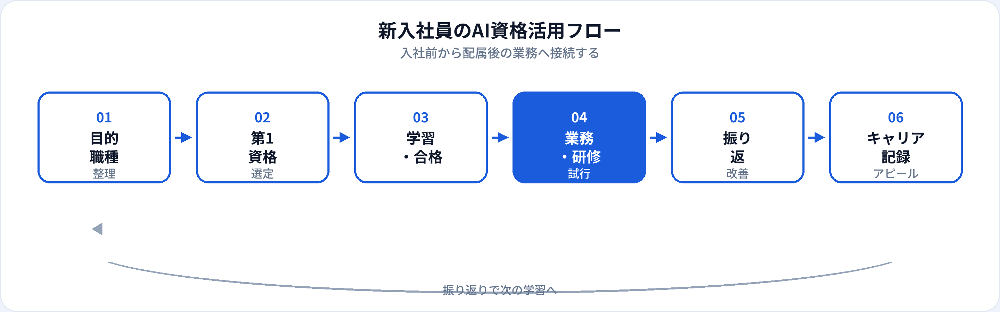

新卒・第二新卒・中途で入社1年目の方にとって、AIは「入社直後から使う業務ツール」になりつつあります。一方、配属前は職種が未定で、何を学べばよいか迷いやすい時期でもあります。本記事では、入社前・配属後それぞれで取るべきAI資格を整理し、取得タイミングと配属後の活かし方まで2026年6月時点で解説します。3資格の横断比較は初心者向け比較記事、大学生の就活視点は学習ガイドも参照してください。
新入社員にAI資格が効く理由
入社1年目は、業務スキルより先に社内ルール・ツール・コミュニケーションを覚える時期です。資格学習は、生成AIを「なんとなく使う」状態から、安全な使い方と用語の整理へ引き上げる助けになります。
就活・内定後のアピール
「生成AIパスポート（年月）」は、AIリテラシーへの意欲を具体的に示せる。特に非エンジニア職のES・面接で差別化になりやすい。
入社研修との接続
多くの企業がAI利用研修を実施。資格で学んだ用語・リスクが、社内ルール理解の土台になる。
配属未定でも汎用
生成AIパスポートは職種横断で使える。配属後に職種特化の第二資格を足す設計がしやすい。
試験対策はこちら
入社前・入社後の取得タイミング
| 時期 | おすすめの動き | 第一候補の目安 |
|---|---|---|
| 就活中（3〜4月） | ES・面接のアピール材料として1資格を完走 | 生成AIパスポート |
| 内定〜入社前（4〜9月） | 就職後の空白期間で学習。入社直後の負荷を下げる | 生成AIパスポート or ITパスポート |
| 入社直後（1〜3か月） | 社内AIルールを確認してから学習開始も可 | 生成AIパスポート |
| 配属後（3〜6か月） | 職種に合わせて第二候補を検討 | 職種別記事を参照 |
| 入社1年目の後半 | 業務実績とセットで履歴書・評価面談に記載 | 第二資格 or 実務成果 |
複数資格の同時並走は避け、最初の1つを完走してから次へ進むのが効率的です。
おすすめ資格の比較
| 資格 | 新入社員との相性 | 学習時間目安 | 向いている状況 |
|---|---|---|---|
| 生成AIパスポート | ◎ 配属未定でも取りやすい | 20〜40時間 | 就活アピール、入社直後の汎用リテラシー |
| ITパスポート | ○ IT・情シス配属見込み | 40〜80時間 | 社内システム、セキュリティ基礎の整理 |
| G検定 | ○ AI・データ職志望 | 80〜150時間 | エンジニア配属、社内でG検定推奨 |
第1候補の選び方
-
第1：生成AIパスポート（基本）
配属未定・就活中・入社直後の第一候補。60問・60分と取り組みやすく、業務で即使える。
-
第2（状況次第）：ITパスポート
IT系配属がほぼ確定、または社内システム理解を先に固めたい場合。
-
第2（状況次第）：G検定
AI・データ職志望、または配属先がG検定取得を推奨している場合。
| あなたの状況 | 第1候補 |
|---|---|
| 就活中・配属未定 | 生成AIパスポート |
| IT・情シス配属見込み | ITパスポート → 生成AIパスポート |
| AI・データ職志望 | 生成AIパスポート → G検定 |
| 社内で資格取得支援あり | 会社推奨の第1候補に合わせる（制度ガイド） |
新入社員の活用フロー

入社1年目は学習→業務試行→振り返り→記録のサイクルを小さく回すことが重要です。資格はそのサイクルの「学習」の柱になります。
配属後：職種別の第二候補
配属が決まったら、職種別記事で第二候補と業務接続を深掘りできます。
| 配属の目安 | 詳細記事 |
|---|---|
| 営業 | 営業職向けAI資格 |
| 企画・経営企画 | 企画職向けAI資格 |
| マーケティング | マーケ職向けAI資格 |
| 事務・総務 | 事務職向けAI資格 |
| 人事 | 人事・総務向けAI資格 |
| 経理・財務 | 経理・財務向けAI資格 |
| サポート・CS | サポート向け · CS向け |
合格後の実践（1年目）
入社1か月目
社内AI利用ルールを読み、資格で学んだ用語と照合。上司に「使ってよい範囲」を確認。
入社3か月目
担当業務1つに生成AIを試す（メール文案、議事録、資料骨子など）。必ず人が最終確認。
入社6〜12か月
成果を1行で記録（時間短縮、ミス削減など）。評価面談・履歴書更新に備える。
新入社員が守るべきルール
| やってよいこと | 避けるべきこと |
|---|---|
| 社内承認済みツールの利用 | 個人の無料AIに社外秘を入力 |
| 公開情報ベースの学習・文案練習 | 先輩・上司の許可なくAI出力をそのまま提出 |
| 社内ルール・研修内容の復習 | 「資格があるから」社内規定を無視 |
| わからないことは先輩に確認 | ハルシネーションを事実として報告 |
就活・社内評価でのアピール
就活・内定後
ES例：「生成AIパスポート（2026年○月）取得。ハルシネーション対策と個人情報保護を理解し、業務での安全な活用を志望。」
面接では具体的な使い方（例：レポート骨子作成＋人が検証）まで話せると説得力が増します。
入社1年目の評価面談
資格だけでは足りない点
入社1年目の評価は業務遂行・協調性・成長速度です。資格はリテラシーの証明になりますが、現場のルール・人間関係・実務スキルは現場で培う領域です。合格後は、小さな業務から安全に試し、先輩のフィードバックをもらうことを優先してください。
よくある質問
新入社員におすすめのAI資格はどれ？
配属未定なら生成AIパスポートが第一候補。IT配属ならITパスポート、AI職志望ならG検定も検討。
入社前に取るべき？入社後？
就活アピールなら入社前が有効。社内ルール確認後に取る選択もあり。最初の1資格に絞る。
文系新卒でもG検定は必要？
必須ではありません。一般職なら生成AIパスポートで十分なことが多い。AI職志望ならG検定を検討。
資格は配属が決まってから取ればよい？
配属前でも生成AIパスポートは汎用性が高い。配属後に職種別記事で第二候補を検討。